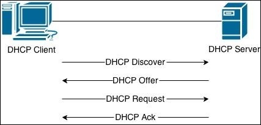
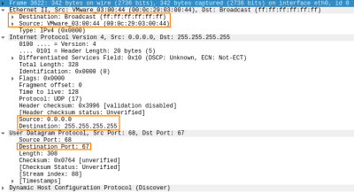
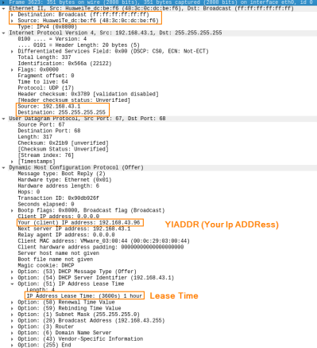
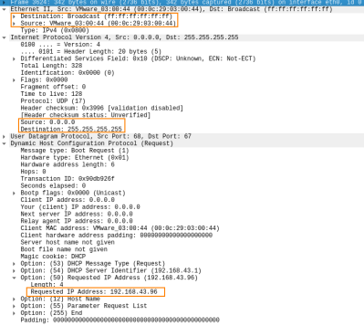
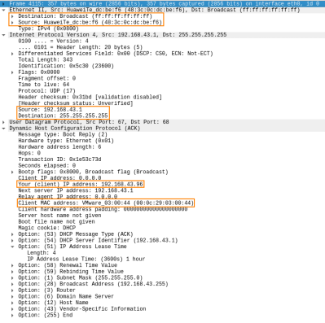

DHCP
DHCP is a service usually running on
routers to dynamically assign or revoke IP address to new hosts on the network.
DHCP is based on the UDP protocol and the exchange of messages are mostly sent in broadcast.
How DHCP works
To have a practical example of how it work start wireshark and execute these commands
sudo dhclient -r eth0 #release the current IP address
sudo dhclient eth0 #obtain a new ip address
1.Client sends a
DHCP Discover broadcast packet
◇ Destination MAC address → ff:ff:ff:ff:ff:ff (broadcast)
◇ Source MAC address → MAC address of the Client's NIC
◇ Destination IP address → 255.255.255.255 (broadcast)
◇ Source IP address → 0.0.0.0 since the host still needs an IP to be assigned
◇ Source port(client) → UDP 67,68
◇ Destination port → UDP 67
2. The DHCP server respond with a
DHCP Offer broadcast packet
◇ Destination MAC address → ff:ff:ff:ff:ff:ff (broadcast)
◇ Destination IP address → 255.255.255.255 (broadcast)
◇ Your (client) IP address - YIADDR → Ip address that the server is offering to the client
◇ Lease Time → defines in seconds the validity period of the offered IP
3. Client sends a
DHCP Request broadcast packet
◇ Destination MAC address → ff:ff:ff:ff:ff:ff (broadcast), the destination address is still broadcast since more than one DHCP server may have send a DHCPOFFER
◇ Source MAC address → MAC address of the Client's NIC
◇ Destination IP address → 255.255.255.255 (broadcast), the destination address is still broadcast since more than one DHCP server may have send a DHCPOFFER
◇ Source IP address → 0.0.0.0 since it has not received a verification from the server
◇ Requested IP Address → DHCP clients choose the best IP address offer
according to the lease time in the DHCP offer, the longer the better. This packet is used to designate a winner between all the DHCP servers(if there is more than one
4. Server send a DHCP ACK broadcast packet
◇ Destination MAC address → ff:ff:ff:ff:ff:ff (broadcast)
◇ Destination IP address → 255.255.255.255 (broadcast)
◇ Your (client) IP address - YIADDR → Ip address that the server assigned to the client
{kind=link}
{kind=link}
{kind=link}